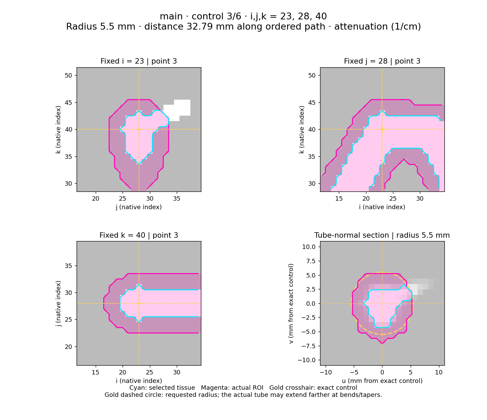

syncoCT
A synthetic CT cohort for hybrid physics-based AI development.
Place a tube around a structure, inspect every control point, apply bounded edits and publish reproducible image–mask pairs. Model training is a separate step.
One workflow, two starting points
Start with the public demo
Three small mathematical vessel phantoms demonstrate enlargement and narrowing with the same generation interface used by the CoA study. ROI review and pair preparation need no XCAT installation, licensed phantom, GPU or pretrained weights.
Continue with an XCAT phantom
Supply matched anatomical-label and attenuation volumes, a geometry audit and an atlas-derived tissue catalog. CoA research inputs provide examples; configure authorized data paths and review the anatomy.
This offline HTML uses local files, with no CDN, web fonts or network scripts. Keep the documentation and complete generated report folders together when sharing them offline.
Repository structure
Start with this walkthrough. The root scripts/ folder contains eight workflow entry points; developer utilities are under scripts/dev/; common workflow code remains in src/. CoA is a case study, while earlier model experiments and development records have their own archive.
configs/templates/ Configuration templates
configs/development/ Maintained API and quality-check scope
configs/examples/ ROI and edit examples
configs/case-studies/coa/ Reviewed phantom recipes and project.json
configs/tissues/ Editable tissue policy
scripts/ Eight workflow commands
scripts/dev/ Static checks and API documentation generation
src/ Shared pipeline modules
tests/ Regression suite
docs/developer/ Workflow, API and testing guides
docs/reference/ Detailed method guides
references/atlas/ Versioned anatomy evidence
requirements/ Install profiles
outputs/ Generated reports, data and models (ignored)
scratch/ Temporary experiments (ignored)
scripts/research/ Advanced studies, audits and cluster jobs
archive/ Research history and legacy assets| Command in scripts/ | Use |
|---|---|
generate_demo.py | Create public phantoms and editable cohort/model inputs. |
prepare_cohort.py | Preview ROI, preflight, freeze and prepare image–mask pairs. |
preview_roi.py | Review a standalone ROI/edit input. |
prepare_tissues.py | Build a tissue catalog from atlas and source evidence. |
resolve_anatomy.py | Optionally refine XCAT selection using anatomical labels. |
cohort_registry.py | Register and verify immutable paired dataset revisions. |
model_experiment.py | Plan, fit, test and summarize a separate experiment. |
train_study.py | Compatibility interface for earlier combined study inputs. |
Use prepare_cohort.py and model_experiment.py for new work. Keep reusable INIs under configs/; initialize reports, pairs, registries and checkpoints under outputs/. The small legacy data/ examples are tracked; local phantom inputs and large arrays are ignored. Use scratch/ for temporary code, then move reviewed reusable changes into the appropriate source folder.
Ignoring generated data prevents accidental Git commits; it is not a backup. Preserve released datasets separately. The method reference index and research archive are optional reading. Follow the development checklist when modifying shared modules.
1 · Install and start
Open the stable main checkout in a terminal. Run from the repository root. Python 3.10 or 3.11 is a practical starting environment.
Clone the repository; its default main branch contains the algorithm framework.
git clone https://github.com/aghcv/FakeCT.git syncoCT
cd syncoCTpython3 -m venv .venv
# Linux / macOS
source .venv/bin/activate
# Windows PowerShell: py -3 -m venv .venv; .venv\Scripts\Activate.ps1
python -m pip install --upgrade pip
python -m pip install -r requirements/core.txt
python scripts/generate_demo.py --output outputs/demoThe initializer writes three source cases, editable per-case cohort.ini inputs, a project index and a separate model.ini. The walkthrough uses the same cohort.ini for ROI review and generation, so you do not need to copy coordinates between files. Each source is a 56 × 56 × 56 grid at 1 mm spacing. The small initial grid prepares nine recipe records per source, 27 total; repeated baseline-equivalent recipes remain visible in the audit.
outputs/demo/
cases/demo01/cohort.ini # Same input from ROI review through preparation.
cases/demo02/...
cases/demo03/...
project.json
model.ini # Separate experiment over published pairs.Use a new initialization output path for a new demo. The testing guide describes installation profiles and backend smoke checks. TensorFlow is loaded only for steps that need model fitting or prediction.
--smoke-test automates fixture review, preparation and registration for a software check; it is never a replacement for human anatomical review.2 · Find your ROI with four standard views
python scripts/prepare_cohort.py \
--config outputs/demo/cases/demo01/cohort.ini \
--stage preview --preview-mode roi-selectionOpen report.html in that INI's [output] directory. Select a control point or use Previous/Next. Every ordered tube point has the same four views. Switch between attenuation and tissue labels without changing geometry.
Inspect j and k position.
Inspect i and k position.
Inspect i and j position.
Inspect radius in millimetres.
The report identifies each point by its ordered number, native i,j,k coordinates and radius. Cyan marks selected tissue, magenta marks the actual ROI, and gold marks the center and requested-radius guide. The normal section uses physical distances, so a round tube remains round when source spacing differs between axes.

- Check position. Change that node's
center_ijktriple when the target is off-center. Use the displayed i, j and k coordinates; anatomical left/right requires a verified coordinate convention. - Check radius. Include the intended structure and exclude unwanted neighbors in the normal section.
radius_mmis a radius, not a diameter. - Check all points and the path between them. List order defines the path; increasing k is not required. Add control points where a bend or close vessel requires finer placement.
- Save a new preview. Change
[output] directoryto a fresh revision, save the INI and run the same command. The report is a viewer; parameter edits happen in the INI. - Record review. Set
coordinate_reviewed = trueafter accepting geometry and selected tissue. This flag records your review; it cannot establish anatomical correctness.
[roi]
shape = tube
center_ijk = 20,25,12 ; 21,25,24 ; 22,26,36 # Illustrative coordinates only.
radius_mm = 5,5,6 # One radius per node.
crop_half_width_mm = 15 # Context around path bounds.
coordinate_reviewed = false
[preview]
mode = full # Cohort mode; CLI can override its preview.
content = attenuation # Or labels for tissue-category display.For a standalone preview INI, use [preview] mode = roi-selection and run python scripts/preview_roi.py --config PATH/roi.ini. The cohort command's --preview-mode override changes only this invocation, preserving one editable input for the workflow.
i,j,k order; arrays use k,j,i. Decimal centers are accepted. Orthogonal panels use the nearest native voxel plane and mark the exact fractional center. The fourth plane passes through the exact physical center and is perpendicular to the local tangent. Endpoints use a one-sided tangent; interior points use adjacent physical directions. Gray padding in that plane denotes unavailable crop data, not anatomy. Display interpolation never changes the native selection.A sphere produces one control-point card; its fourth panel is an i–j physical section because a sphere has no path tangent. Keep the dedicated selector focused on placement and radius. Full edit reports remain available later for change overlays, profiles and reassignment evidence.
What becomes the target?
With tissue-only selection, the initial target is tissue category ∩ ROI. Blank source_ids is supported. If a second artery enters the tube, it is also selected: inspect neighbors and optionally add anatomical filtering for XCAT.
With recipe.roi_role = selection, the ROI selects original target ancestry. Dilation may grow beyond the selector into the available crop under the tissue policy. A thicker selector is not the control for stronger dilation.
3 · Design a controlled population
Continue editing the same cohort.ini. Named steps run serially within one sibling; every new sibling starts from its original source. Shared tube intervals avoid maintaining several centerline lists.
[recipe]
steps = ascending_expand, arch_narrow, coa_narrow
overlap = sequential
roi_role = selection
[edit.coa_narrow]
roi = main
path_percent = 60,85 # Physical parent-path interval, in percent.
operation = erosion
distance_mm = 1 # Requested per-pass budget, before resistance.
iterations = 1
profile = gaussian
profile_axis = tube
shape_k = 6
shape_window = 0,1
assign_surrounding_tissue = true
[sweep.coa_narrow]
distance_mm = 0,1,2 # Zero disables this step in that variant.This snippet explains fields; edit the existing generated sections rather than appending duplicates. path_percent measures physical arc length from the first listed point. shape_window is local to the selected interval. Independent named ROIs remain available for regions that cannot share a path.
Dilation
Borrow permitted neighbors, preserve target ancestry and copy accepted target attenuation. Donor stiffness reduces the propagation budget.
Erosion
Release target voxels and find permitted neighboring recipients for labels and attenuation. Unresolved releases retain their input state. Paired images require assign_surrounding_tissue = true.
distance_mm is neither guaranteed diameter displacement nor clinical percentage stenosis. Spacing, taper, resistance, recipient availability and manually enabled safeguards determine achieved changes. Review native counts and geometry before interpreting severity.
Sweeps form a Cartesian product. 1:3:1 includes 1,2,3; comma lists support uneven spacing. Add one axis at a time, keep max_variants bounded and inspect every native result.
To inspect the current base recipe, choose a fresh [output] directory and run:
python scripts/prepare_cohort.py \
--config outputs/demo/cases/demo01/cohort.ini \
--stage preview --preview-mode fullAdvanced controls: stiffness, direction and safeguards
Stiffness is a dimensionless editing weight from 0 to 1, not an elastic modulus. Bone and skin protection are editable. Curvature-relative direction = inner or outer needs a valid centerline frame; inspect straight/noisy portions. angular_width_deg defines the sector. Erosion safeguards such as min_volume_ratio and preserve_connectivity are optional per edit. Omitted safeguards remain disabled.
References: recipes, curvature, safeguards, selection and growth.
4 · Preflight, freeze and prepare pairs
The cohort INI's [train] section is the historical name for generation-stage settings. Under fakect.recipe-cohort/1, it does not train a neural network.
# Validate every discrete combination; no native edit execution.
python scripts/prepare_cohort.py \
--config outputs/demo/cases/demo01/cohort.ini --validate-only
# Execute every native recipe; review preflight.html, JSON and CSV.
python scripts/prepare_cohort.py \
--config outputs/demo/cases/demo01/cohort.ini --stage preflightMetadata validation cannot prove target presence, realized changes, connectivity or distinct siblings. Preflight executes the grid and exposes no-change outcomes, duplicates, reassignment limits and safeguard reductions. An optional --stage plan writes an inventory to [output] directory; use a fresh output directory if a preview already occupies it.
Set [roi] coordinate_reviewed = true before the final native preflight. After accepting native outcomes, set [train] parameters_reviewed = true. Updating only this parameter-review decision is supported after preflight; changed geometry, ranges or tissue policy need a new preflight revision.
python scripts/prepare_cohort.py \
--config outputs/demo/cases/demo01/cohort.ini --stage freeze
python scripts/prepare_cohort.py \
--config outputs/demo/cases/demo01/cohort.ini --stage prepareRepeat the same sequence for demo02 and demo03. Freeze pins exact INI bytes and matching preflight. After freezing, do not edit the INI, including comments, paths or stage values. Use CLI overrides. A changed study needs new preflight, freeze and pair directories.
| Stage | Produces | What it establishes |
|---|---|---|
| ROI selection | Four-panel control-point report | Placement/radius evidence. Source is read only; no edits. |
| Full cohort preview | Base-recipe edit report | One representative recipe, not the full grid. |
| Plan / validate | Parameter inventory / metadata result | No native recipe execution. |
| Preflight | All discrete native outcomes | Actual edits; no training-pair archives. |
| Freeze | Exact input and matching preflight lock | Reviewed ROI/parameters and successful native preflight. |
| Prepare | Native image/mask pairs and manifest | Complete paired export after checks pass; no model fitting. |
Populated outputs are refused. Failed work retains an INCOMPLETE marker and cannot be registered as a release. Inspect diagnostics and start a new revision when changing settings.
5 · Publish data, then train and evaluate
Publish each prepared dataset under the name selected by model.ini. Registration validates bytes and array contracts, then copies a checksum-pinned object into the registry.
python scripts/cohort_registry.py register \
--registry outputs/demo/registry \
--dataset outputs/demo/cases/demo01/pairs-r1/dataset-manifest.json \
--name demo01-r1 --anatomy-family synthetic-demo01 --family-verified
python scripts/cohort_registry.py verify \
--registry outputs/demo/registry --name demo01-r1Repeat for demo02-r1 and demo03-r1 using their source families. For generated fixtures, --family-verified records known source identity, not biological independence. For real data, review template/shared-source provenance before setting this flag.
python -m pip install -r requirements/tensorflow.txt
python scripts/model_experiment.py \
--config outputs/demo/model.ini --validate-only
python scripts/model_experiment.py \
--config outputs/demo/model.ini --stage plan
python scripts/model_experiment.py \
--config outputs/demo/model.ini --stage fitThe separate model INI selects published revisions, physical resampling, normalization, family assignment and a compact TensorFlow U-Net. It does not edit phantoms or regenerate pairs. The input is attenuation; masks are supervision. ROI coordinates, fine labels, baselines and change masks must not leak into a task advertised as attenuation-only segmentation.
With the supplied [evaluation] protocol, test and report aggregation are explicit:
python scripts/model_experiment.py \
--config outputs/demo/model.ini --stage test
python scripts/model_experiment.py \
--config outputs/demo/model.ini --stage summarizeAll siblings, slices, motion frames and revisions of one source family stay together. Validation selects checkpoints; test data remain reserved. More siblings increase morphology coverage, not independent subject count.
Hand off to another trainer
Use the immutable pair manifest: read image, mask, geometry and checksums; preserve units, label semantics and grouped splits. Keep original-label, lineage and edit evidence for audit. Patient inference and generic [generate] deployment require a task-specific implementation and validation.
XCAT CoA: the research case study
The case study modifies ascending enlargement, arch narrowing and isthmus/descending coarctation-like narrowing. It demonstrates shared-path editing, longitudinal taper, optional curvature-relative asymmetry, tissue resistance and local safeguards.
| Reference | Purpose |
|---|---|
| Case 260602 recipe | Reviewed anatomy-filtered input with enlargement and two narrowing steps. Historical local paths/locks are not portable defaults. |
| Twelve-case project index | Source definitions; not proof that every downstream model evaluated all twelve cases. |
| Basic TensorFlow model input | Separate dataset selection and resampling. Review historical receipt names and family provenance. |
| Grouped evaluation input | Whole-family holdout and rotating evaluation, decoupled from generation. |
| Branch-inclusive pretrained adaptation | The later TotalSegmentator case study uses a PyTorch backend and broader matched anatomical targets; it is separate from the portable TensorFlow baseline. |
- Confirm source channels. Match instantaneous ACT and ATN case/frame volumes. ACT contains signed anatomical IDs; ATN contains attenuation. Audit
.par/log dimensions and spacing. Averaged ACT blends IDs and cannot be categorical anatomy. - Obtain a reviewed catalog. Keep original IDs/names, atlas hierarchy and coarse categories together. Attenuation thresholds alone cannot distinguish all arteries and veins.
- Create a local revision. Replace source/audit/catalog paths; reset review flags; choose fresh preview, preflight, freeze, pairs and optional anatomy-selector destinations.
- Review the ROI. Use the standard four panels. Case 260602 coordinates do not transfer unchanged to a new phantom.
- Optionally resolve anatomy. Enable
anatomy = thoracic_aortaand a freshanatomy_file. Surface names/atlas eligibility and native contact refine IDs; review pulmonary exclusions and arch-branch coverage. - Preflight → freeze → prepare. Accept achieved anatomy on every source case before publishing pairs.
# Replace /path/to/xcat and choose an available case.
python scripts/research/evaluation/audit_xcat.py \
--base /path/to/xcat --cases 260602 \
--output-prefix outputs/my-coa/source-audit --no-plots
python scripts/prepare_tissues.py catalog \
--supplemental-organ-table references/atlas/xcat/organ_ids.040.txt \
--raw-case-dir /path/to/xcat/260602 --frame 1 \
--out outputs/my-coa/tissues-r1
# After updating your copied INI; only resolve if anatomical filtering is enabled.
python scripts/resolve_anatomy.py --config configs/my-coa.ini
python scripts/prepare_cohort.py --config configs/my-coa.ini \
--stage preview --preview-mode roi-selectionThe audit checks geometry/file sizes and sampled values, not exhaustive orientation or labels. RAW ordinals are not ACT voxel IDs. Join names/atlas/dictionary evidence explicitly; do not infer anatomy by attenuation, removing signs or triangle order.
The local selected-lineage target and a complete thoracic aorta plus branches are different annotation policies. Reference and compared models must use the same anatomical target definition; a shared bounding box alone does not remove label differences.
Historical references: multi-phantom preparation, catalog, optional anatomy selection, project history. This guide defines the workflow entry point; older documents retain earlier milestone descriptions.
INI reference: editable fields
Use one value per line. Tube triples are semicolon-separated; number lists use commas. Use # for inline comments. Unknown keys, misspellings and duplicate sections fail rather than being ignored.
| Field / section | Meaning and check |
|---|---|
[input] | Source root, case/frame, audit and catalog; labels and attenuation must match. |
tissue / source_ids | Coarse category and optional signed-ID refinement. Blank IDs require no numeric XCAT knowledge. |
anatomy / anatomy_file | Optional audited anatomy selector. Re-resolve after ROI/source/catalog selection changes. |
center_ijk / radius_mm | Ordered zero-based control points and physical radii; one radius per point. |
crop_half_width_mm | Context beyond path-coordinate bounds. It must contain selector/edit/search halo. |
coordinate_reviewed | Manual ROI acceptance; set before final native preflight. |
[preview] mode / content | roi-selection or full; attenuation or labels. Display settings do not change edits. |
[recipe] steps | Ordered edit names. Each sibling starts from source; its own edits are serial. |
roi / path_percent | Referenced selector and active percentage of physical parent-path length. |
operation / distance_mm / iterations | None/dilation/erosion, per-pass budget and finite passes. Measure achieved changes. |
profile / shape_window | Longitudinal taper and local normalized interval inside the selected edit range. |
assign_surrounding_tissue | Use actual recipients for erosion. Required true for active erosion in paired images. |
[stiffness] | Dimensionless tissue resistance, 0 permissive to 1 rigid. |
[sweep.NAME] | Discrete variation of a named edit. Axes multiply; bound count and inspect outcomes. |
[train] in cohort | Generation-stage paths and review flags, not neural-network settings. |
[experiment] / [model] | Separate published-dataset selection and fitting settings. |
[evaluation] | Grouped holdout/rotation; test families cannot select training settings. |
[output] directory | Fresh saved preview/plan revision; populated outputs are not overwritten. |
Relative INI paths resolve from the repository root, not the INI folder. Absolute paths and ~ are supported; shell environment variables are not expanded. Generated demo inputs already locate their local assets.
Data, traceability and sharing
Track in Git
Code, INI templates, policies, atlas reference provenance, documentation and tests. Develop on a feature branch and review focused changes.
Store as artifacts
Volumes, paired NPZs, registry objects, checkpoints and complete reports are excluded from Git. Keep a separate backup; ignore rules are not data protection.
Pair archives contain float32 attenuation image, uint8 binary mask, edited_labels, changed_mask, scalar_changed_mask, target_origin_index, edit_region_mask and metadata_json. The source/baseline arrays and serial metadata remain in companion artifacts. Native image units are cm^-1. Editing copies accepted target/recipient attenuation as a proxy; it is not a physical scanner reconstruction or learned background recovery. HU conversion/pretrained preprocessing require a separate calibrated adapter.
added = after_mask & ~before_mask
removed = before_mask & ~after_maskDerive these added/removed masks from matching baseline and sibling binary masks; they are not separate arrays in the native pair archive. They describe net changes: later edits can cancel earlier changes. Keep serial metadata for history. Removed voxels are outside the final target and must not be clipped to it. Counts depend on resolution; multiply by voxel volume for physical comparisons and choose explicit normalization for cross-phantom severity.
source-manifest.json records the initializer snapshot; the editable INIs can subsequently be reviewed and revised. Generation freeze then pins the reviewed exact input bytes, matching preflight and generation dependencies. The pair manifest pins arrays and native geometry. Registration preserves immutable objects and named receipts. A model lock separately pins revisions, family assignment, preprocessing and implementation. Changed inputs require new revisions.
Keep complete registry trees and their relative artifact layout when sharing. Raw-source audits and freezes may contain absolute paths; moving raw data requires a new audit/review instead of silently patching locked provenance. Published pairs can be reused for a new model without reopening raw XCAT or matching the latest generator code.
Licensing and scientific scope
syncoCT code uses the repository's MIT license. That license does not grant XCAT access, redistribute third-party anatomy or waive pretrained-weight terms. Supply assets under their respective permissions and retain attribution. The mathematical demonstration creates its own arrays without copying XCAT anatomy.
Digital siblings are controlled variants, not new independent patients. Study robustness using matched population-size/diversity comparisons and unseen-anatomy evaluation. This guide makes no completed clinical-validation, all-twelve-phantom model-scope or performance claim.
Development checklist and protection plan
Review each code change against these boundaries. The developer conventions define function headers, error handling and extension contracts; the API reference shows source signatures and documentation. The testing guide documents executable checks and optional backend environments.
- Preserve the entry point: initialize the public demo in a fresh directory and keep commands/input schemas documented.
- Protect source geometry: signed labels, finite values, array order, anisotropic spacing and bounds; unchanged source bytes and exterior voxels.
- Protect ROI semantics: straight/curved paths, variable radii, decimal centers, endpoints and clipped boundaries; consistent four-panel coordinates.
- Protect editing: serial dilation/erosion, stiffness, borrowed/released ownership, optional safeguards and selected ancestry beyond the selector.
- Protect releases: metadata-only stages, incomplete failures, freeze mismatches, tampering, duplicates and overwrite refusal.
- Protect experiments: source-family grouping, no label/ROI/baseline leakage into CT-only inputs, explicit normalization and resampling.
- Protect backend compatibility: execute TensorFlow smoke checks when loaders, losses, networks or checkpoints change; distinguish actual execution from skips.
- Protect usability: open reports offline, verify documented commands and keep private data/cluster access optional.
python -m pip install -r requirements/dev.txt
python scripts/dev/check_quality.py
python -m pytestUse a feature branch, add a regression test for changed behavior and run the relevant checks. The mathematical demo is an end-to-end software check; full-resolution licensed XCAT and GPU runs are additional integration checks.
Troubleshooting
| Message / symptom | Action |
|---|---|
| Output exists | Choose a new revision for that stage. Inspect partial diagnostics; do not overwrite a release. |
| Insufficient source/crop halo | Increase crop context if bounds permit, or shorten/relocate the path or reduce edit/search distance. |
| 3D display over budget | Use ROI-only placement. For full reports, raise volume_stride or reduce display context; native geometry is preserved. |
| No target / wrong neighbor | Check tissue catalog, centers, radii and optional anatomy filter. Two arteries inside a tube may both be selected. |
| Point/radius count mismatch | One radius per ordered point; remove doubled separators and repeated adjacent nodes. |
| Frozen dependencies changed | Review a new generation revision and matching preflight. Reusing published pairs needs no new generation freeze. |
| Missing/unverified registry entry | Prepare/register every selected dataset and review actual template ancestry before verifying real-data families. |
| TensorFlow missing | Install the optional compatible profile; preview/preflight/prepare need no TensorFlow. See backend checks. |
Use each script's --help. Correct the editable input or generate a new artifact revision when validation fails; do not alter checksums to suppress a mismatch.